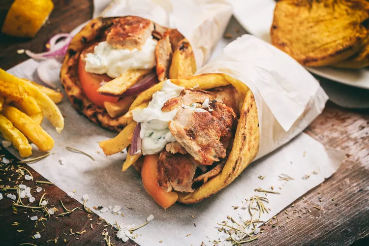

Shawarma

Description
A shawarma is made with meat that has been cooked on a vertical rotisserie, is a popular street food with Middle Eastern origins.
"Shawarma" comes from the Turkish word "çevirme," which means "turning."
Though it's traditionally made with lamb or mutton, today's shawarma can consist of anything from chicken to veal. Like gyros, shawarmas are typically served on pitas.
Ingredients
- ½ cup plain yogurt
- ¼ cup water
- 2 tablespoons fresh lemon juice
- 1 tablespoon distilled white vinegar
- 1 tablespoon olive oil
- ½ cup chopped onion
- 2 cloves garlic, minced
- 1 tablespoon salt
- ½ teaspoon ground black pepper
- ½ teaspoon ground cumin
- ⅛ teaspoon ground nutmeg
- ⅛ teaspoon ground cloves
- ¾ teaspoon ground mace
- 1 teaspoon cayenne pepper
- 5 pounds boneless lamb shoulder, cut into 1/4-inch-thick strips
Steps
- Place the yogurt, water, lemon juice, vinegar, olive oil, onion, and garlic into a large mixing bowl.
Whisk in the salt, black pepper, cumin, nutmeg, clove, mace, and cayenne pepper until evenly blended.
Mix in the lamb strips to coat. Cover the bowl with plastic wrap, and marinate in the refrigerator 12 to 24 hours (the longer the better).
- Heat a large skillet over high heat.
Cook the lamb strips in a single layer in batches until the fat melts and the meat has browned and is no longer pink on the inside,
about 5 minutes, turning occasionally.